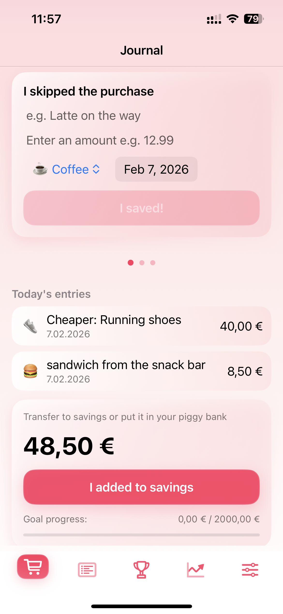
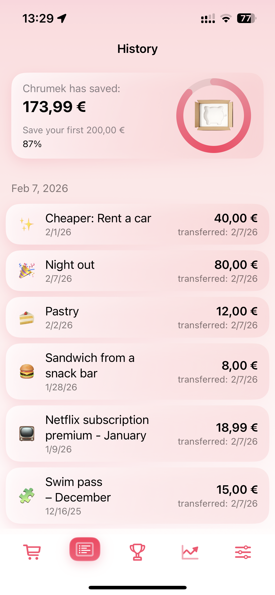
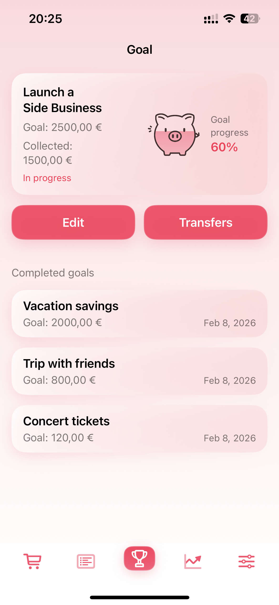
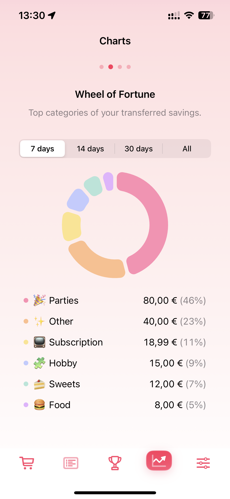
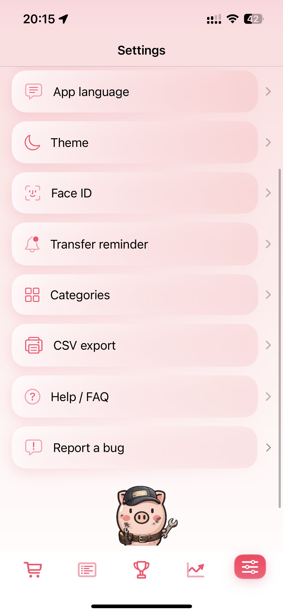

Logga ett sparande
Lägg till en post: överhoppat köp, billigare alternativ eller avbruten prenumeration.
En app för riktigt sparande
För människor som vill spara på riktigt, inte bara "spendera mindre."
Logga dina vardagliga besparingar, flytta dem till ett separat sparkonto eller en spargris och skapa målframsteg. I Chrumek är det bara pengar du faktiskt sätter åt sidan som räknas.
Detta är inte en annan utgiftsspårare. Här loggar du bara frestelser du motstått och besparingar du faktiskt gjort.





Lägg till en post: överhoppat köp, billigare alternativ eller avbruten prenumeration.
Överför beloppet till ett separat sparkonto eller släpp det till din spargris.
Tryck på "Lägg till i besparingar" och först då räknas beloppet mot framsteg, diagram och mål.
Nyckelmoment: Först efter att ha tryckt på "Lägg till i besparingar" uppdateras framsteg, diagram och mål.
Vad du får i appen
Sekretess och förtroende
Dina spardata lagras lokalt på din enhet.
Du behöver inte skapa ett konto för att använda appen.
Vi använder inte annonsspårare eller analyser från tredje part.
Vardagsfunktioner
Tidning
Logga snabbt hur mycket du sparat och från vilken kategori, utan onödig bokföring.
Mål
Sätt ett sparmål, spåra framsteg och lås upp nya Chrumek-nivåer baserat på bekräftade belopp.
Påminnelser
Om du har pengar som väntar på att läggas åt sidan, påminner Chrumek dig om att överföra dem vid din valda tidpunkt.
Diagram
Se din riktiga sparrytm och vilka kategorier som bidrar mest till ditt sparande.
Historia
Varje bekräftad överföring visas i historiken. Du kan återställa en post eller ta bort den när du behöver korrigera data.
CSV
Exportera besparingar och mål till CSV med ett datumintervall närhelst du behöver en rapport utanför appen.
Starta gratis
Börja utan kort och se hur Chrumek fungerar i verkligheten.
Från den 11:e överföringen gäller Premium (14 dagars provperiod om berättigad).
Räknaren spårar tryck på "Lägg till i besparingar" (bekräftelser), inte bara poster.
FAQ
Nej. Det räcker med ett separat sparkonto eller spargris. Du bekräftar överföringar manuellt med knappen "Lägg till i sparande".
Ja, kärnfunktionerna fungerar lokalt på din enhet: journal, historik, mål och diagram.
Tryck inte på "Lägg till i sparande" förrän överföringen är verklig. Om du bekräftade av misstag kan du återställa posten i Historik.
Du får 10 gratis bekräftade överföringar. Från den 11:e gäller Premium; om du är kvalificerad kan du starta en 14-dagars provperiod.
Ja. Data lagras lokalt, inget skickas externt. Appen fungerar utan konton och utan annonsspårare.
Ja. Du kan exportera data till CSV (med ett datumintervall) och spara filen lokalt eller till till exempel iCloud Drive.
Vad författaren säger
"Klassiska utgiftsspårare förvandlar dig till en heltidsbokhållare: du slår in kvitton, kategorier och anteckningar, och i slutet av månaden får du en rapport som säger "grattis, du har spenderat pengar." Chrumek fungerar tvärtom: den fångar ögonblicket när du inte spenderade (eller spenderade mindre) och förvandlar det till ett konkret belopp "att överföra pengar" men bara att spara pengar. överföring gör skillnad."
Vad testare säger
"För första gången kan jag tydligt se hur mycket jag faktiskt avsatte, inte bara hur mycket jag planerade att spara. Det förändrar allt."
"Den här appen är inte en skulddagbok. Chrumek frågar inte om du var "bra". Den kontrollerar om du faktiskt har överfört dina besparingar. Och den belönar inte goda avsikter. Bara det du verkligen lägger åt sidan räknas."
Vi skickar dig en TestFlight-inbjudan så snart betaversionen är tillgänglig. Ingen spam.
Genom att skicka öppnar du din e-postapp med ett förifyllt meddelande.